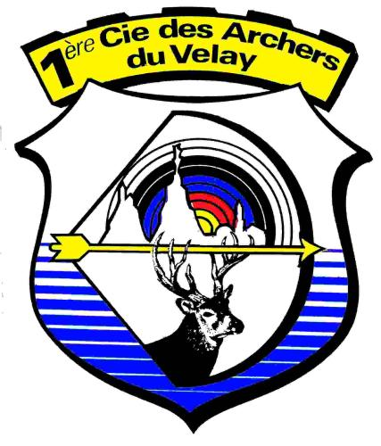
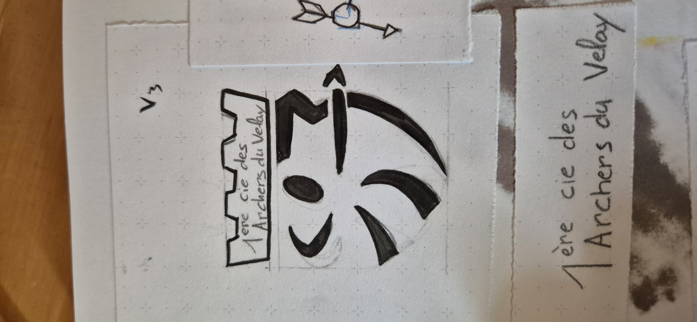
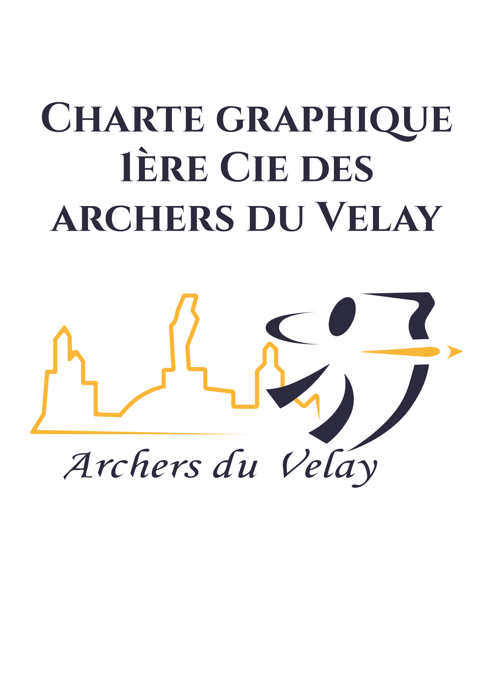
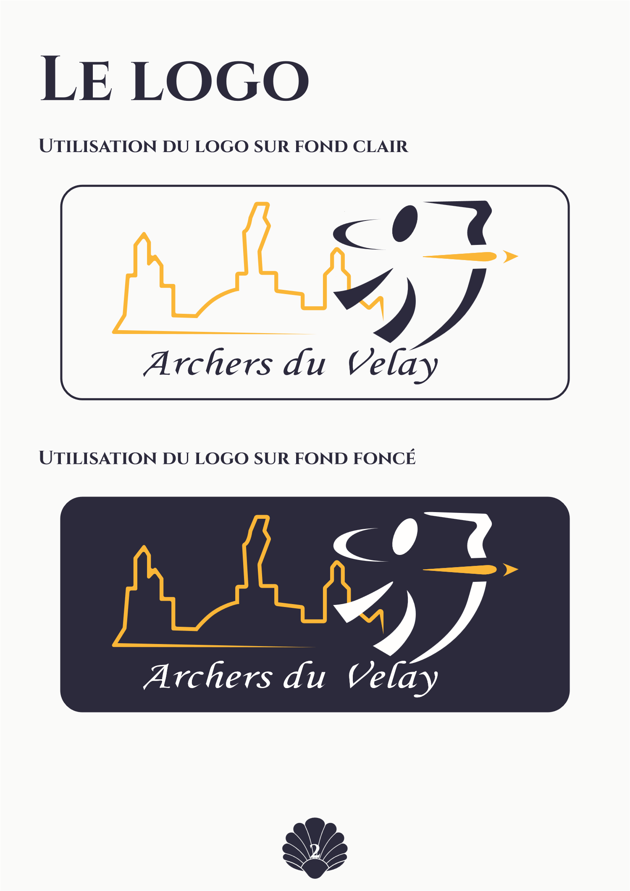
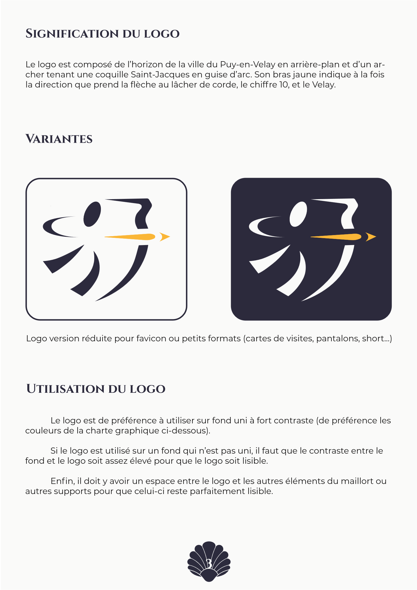
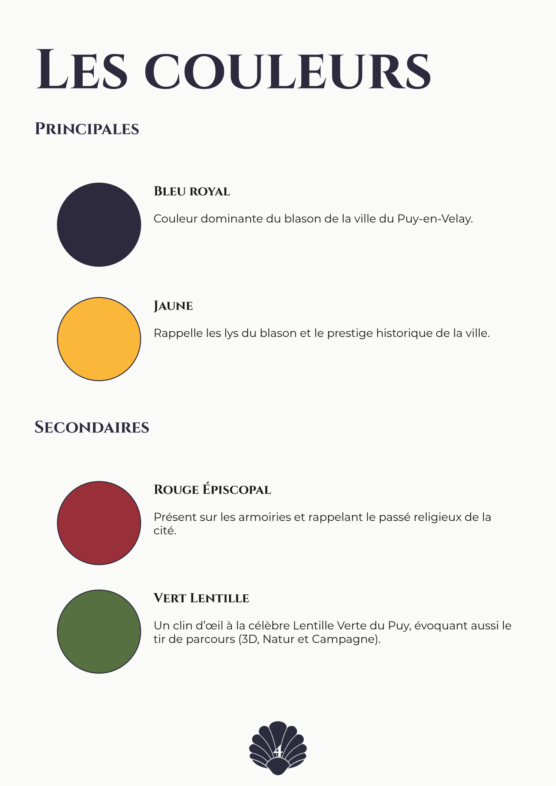
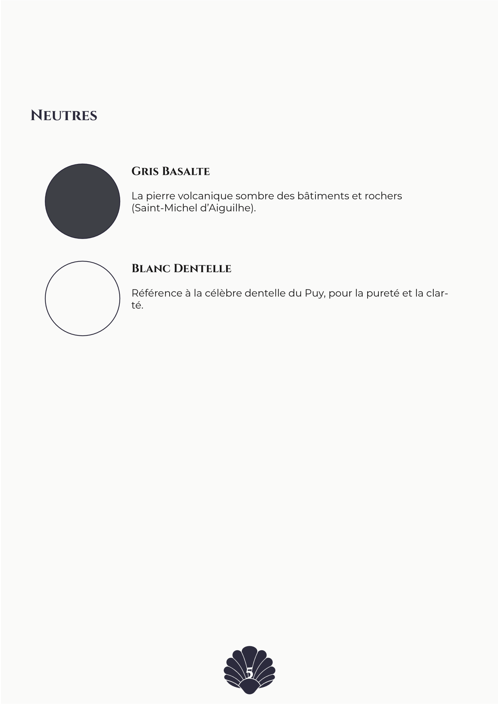
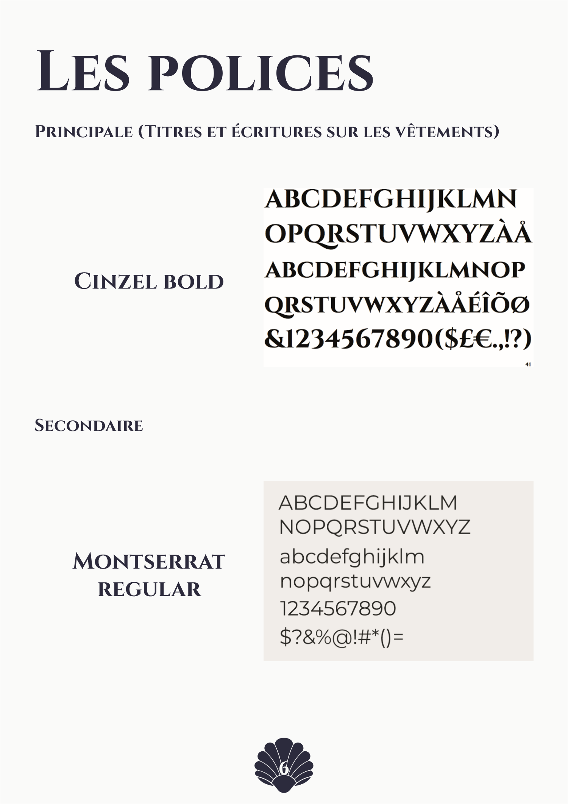
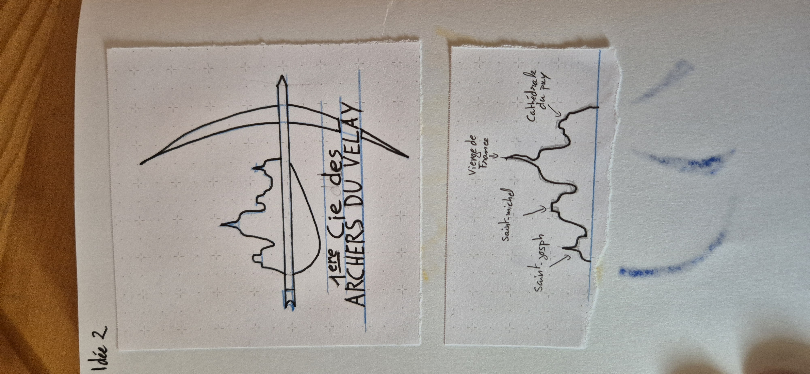
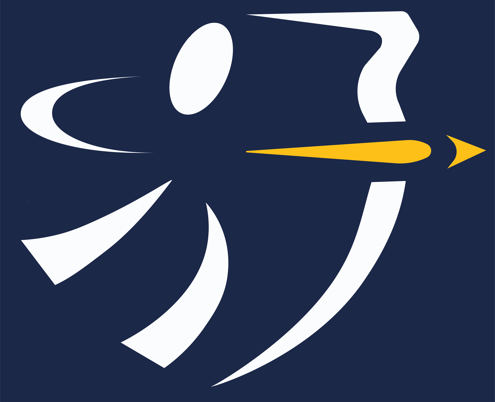

Archers
du Velay.
Moderniser l'identité visuelle du club historique du Puy-en-Velay tout en célébrant son patrimoine local.
- Commanditaire
- 1ère Cie des Archers du Velay
- Cadre
- Étudiants volontaires · BUT MMI Le Puy
- Livrables
- Logotype, déclinaisons & charte
- Outils
- Illustrator, InDesign, Photoshop, Croquis
Moderniser un blason associatif sans perdre l'âme du Puy-en-Velay.
La 1ère Compagnie des Archers du Velay a proposé aux étudiants volontaires du BUT MMI du Puy-en-Velay de repenser et moderniser son identité visuelle ainsi que sa charte graphique. À la fois étudiant en communication/graphisme à l'IUT et archer passionné, j'ai immédiatement saisi cette opportunité pour concevoir une proposition complète, ancrée dans l'histoire du territoire.
L'objectif était double : remplacer un blason traditionnel complexe et difficilement lisible en petit format par un logotype vectoriel contemporain, dynamique et adaptable (maillots de compétition, réseaux sociaux, fonds clairs et sombres), tout en conservant les marqueurs forts de la ville du Puy-en-Velay.
Avant / Après : du blason complexe au signe graphique.

La coquille Saint-Jacques en guise d'arc, l'horizon du Puy en toile de fond
Après plusieurs planches de croquis sur carnet pour explorer les postures de tir et l'intégration des monuments, j'ai construit un logotype à triple niveau de lecture :
- La coquille Saint-Jacques comme arc : l'archer bande une coquille stylisée, clin d'œil direct au départ de la Via Podiensis (chemin de Saint-Jacques-de-Compostelle) au Puy-en-Velay.
- La ligne d'horizon ponote : en arrière-plan se dessinent les silhouettes emblématiques de la ville (Cathédrale Notre-Dame, Statue de Notre-Dame de France, Rocher Saint-Michel d'Aiguilhe).
- Le bras jaune directeur : il suggère simultanément la trajectoire de la flèche au lâcher, le chiffre 10 (centre de la cible) et le V de Velay.

Une palette puisée dans le terroir du Velay
Chaque teinte de la charte graphique raconte une facette de l'identité locale et de la pratique du tir à l'arc :
- Bleu Royal (#00559B) & Jaune Or (#FFE900) : couleurs historiques du blason du Puy-en-Velay, gages de dynamisme et de visibilité sur les pas de tir.
- Rouge Épiscopal (#BF0811) : emprunté aux armoiries historiques de la cité.
- Vert Lentille (#3C892E) : hommage à la Lentille Verte du Puy AOP et aux parcours extérieurs (Tir 3D, Nature et Campagne).
- Gris Basalte (#2B2A29) & Blanc Dentelle (#FEFEFE) : référence à la roche volcanique des pitons et à la dentelle traditionnelle du Puy.
L'ensemble s'accompagne d'un duo typographique complémentaire : Cinzel Bold pour l'ancrage historique des titres et des tenues, associé à la modernité géométrique de Montserrat Regular pour les textes courants.

La charte graphique intégrale
Règles d'utilisation du logotype, proportions, palette chromatique identitaire et déclinaisons officielles.







